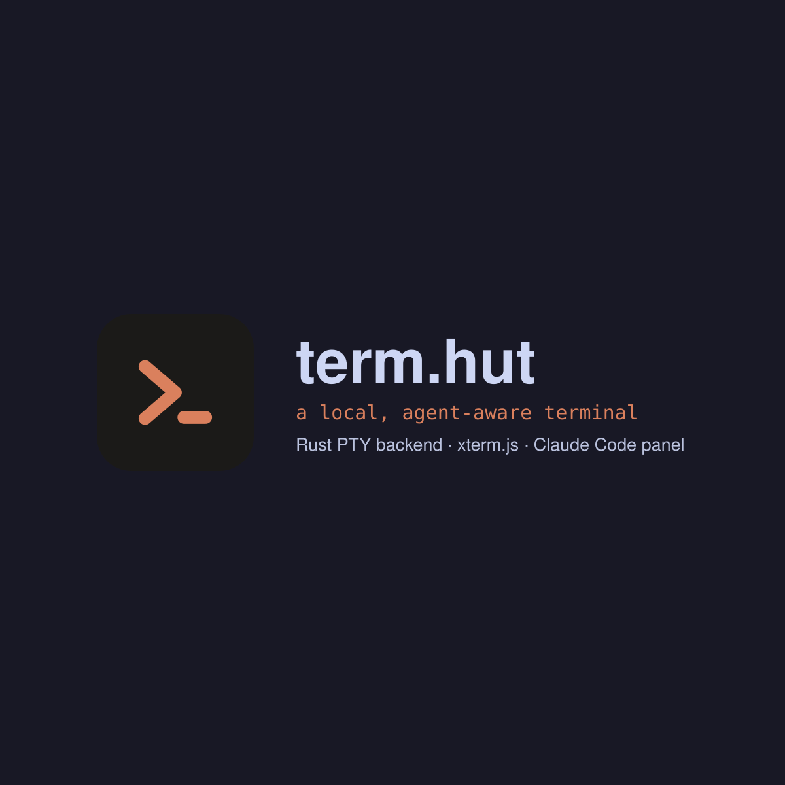

favicon.svg · rounded tile
tab, header, footer
tab, header, footer
icon-full.svg · maskable
manifest, launcher — never on a page
manifest, launcher — never on a page

og.svg → og.png 1200×630
one card for the whole site
one card for the whole site